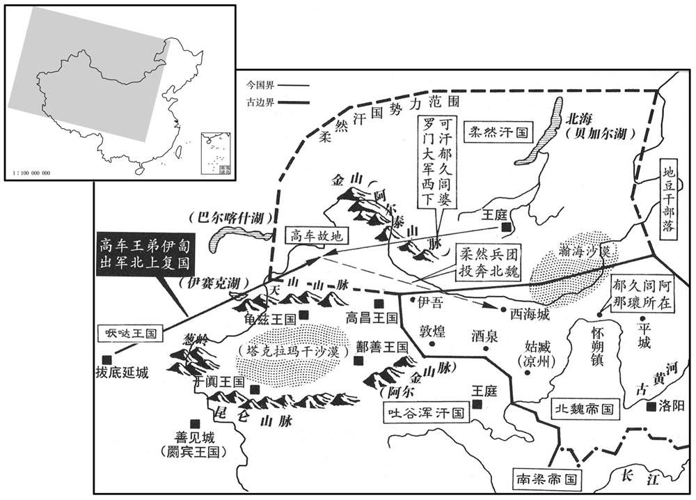

公元521年资治通鉴：本年记事、原文与白话对照
按原书编年位置阅读；追叙和史论不等于本年发生的事件。白话采用所据译本，缺译不以生成译文补齐。
卷149 · 本年记事
公元521年 · 梁高祖武皇帝普通二年
二年〔（辛丑、五二一）〕
本年事件索引（现代整理）
- 梁军救援浮山堰，李平攻破西硖石，赵祖悦投降被斩
- 胡太后命崔亮乘胜深入，崔亮擅自班师获宽免
- 元匡弹劾于忠专权，胡太后不予追究
- 元匡再弹劾侯刚，侯刚被削户免职
- 发生日食
- 北魏论西硖石之功，崔亮与李平争功
- 萧宝寅将梁武帝招诱书呈给魏朝
- 康绚掘鲆分水，减轻浮山堰水患
- 张豹子诬告康绚通魏，梁武帝召其还朝
- 胡太后恢复于忠爵位，并封崔光为侯
- 傅竖眼击败张齐，恢复北魏益州
- 刘氏率城中军民坚守关城百余日
- 梁任王莹、袁昂、王暕为尚书台重臣
- 傅竖眼大破张齐，东益州归北魏
- 胡国珍任雍州刺史
- 淮水暴涨冲毁浮山堰，淮边十余万户漂入海中
- 崔光劝胡太后减少巡幸宗戚勋贵之家
- 袁翻谏言改进边将选任，胡太后未采纳
- 胡太后大兴佛寺，李崇请节费修明堂太学
- 北魏东益、南秦两州氐人叛乱
- 北魏遣元洪超前往敦煌安置柔然婆罗门
春，正月，辛巳，上祀南郊。
春季，正月辛巳（十二日），梁武帝在南郊祭天。
置孤独园于建康，以收养穷民。〔古者鳏寡孤独废疾者有养。帝非能法古也，祖释氏须达多长者之为耳。〕
梁朝在建康设立孤独园，用来收养穷困百姓。
戊子，大赦。
戊子，（十九日），梁朝大赦天下。
魏南秦州氐反。
北魏南秦州的氐人造反。
魏发近郡兵万五千人，〔近郡，近辅诸郡也。〕使怀朔镇将杨钧将之，〔将，息亮翻；下同。〕送柔然可汗阿那緕返国。尚书左丞张普惠上疏，以为：「蠕蠕久为边患，今兹天降丧乱，〔丧，息浪翻。〕荼毒其心，盖欲使之知有道之可乐，革面稽首以奉大魏也。〔乐，音洛。稽，音启。〕陛下直安民恭己以悦服其心。阿那緕束身归命，抚之可也；乃更先自劳扰，兴师郊甸之内，投诸荒裔之外，救累世之勍敌，资天亡之丑虏，臣愚未见可也。〔勍，渠京翻。〕此乃边将贪窃一时之功，不思兵为凶器，王者不已而用之。〔用老子语意。〕况今旱暵方甚，圣慈降膳，〔暵，呼旱翻。〕乃以万五千人使杨钧为将，欲定蠕蠕，干时而动，其可济乎！脱有颠覆之变，杨钧之肉，其足食乎！〔用左传楚孙叔敖斥伍参语意。〕宰辅专好小名，〔好，呼到翻。〕不图安危大计，此微臣所以寒心者也。且阿那緕之不还，负何信义，臣贱不及议，〔汉自议郎以上皆得预朝廷大议，尚书二丞，于当时位不为卑，而以为贱不及议，盖自曹魏以后，朝廷大议止及八坐以上。〕文书所过，〔文书皆过尚书二丞之手。〕不敢不陈。」〔【章：十二行本「陈」下有「弗听」二字；乙十一行本同；孔本同；张校同。】〕阿那緕辞于西堂，诏赐以军器、衣被、杂采、粮畜，事事优厚，〔采，与彩同。畜，许救翻。〕命侍中崔光等劳遣于外郭。〔劳，力到翻。〕
北魏征调附近郡县的一万五千多兵力，由怀朔镇将杨钧统率，送柔然可汗阿那瓌回国。尚书左丞张普惠上书孝明帝，认为：“蠕蠕国长期以来一直是我们边境上的祸患，现在老天给他们降下灾害、战乱，让他们心灵受苦，这大概是为了让他们懂得只有按天道行事才能安乐，让他们悔过自新、规矩顺从地来侍奉我们大魏朝呀。陛下应当安抚百姓，端正自身以使天下百姓心悦诚崐服。阿那瓌只身来投奔，安抚他就可以了，您却首先为此而劳扰天下，在京城内外兴师动众，把他们指派到荒僻偏远之处，去救助几代以来都是我们的强敌之人，帮助老天爷都要使他灭亡的丑恶的蛮虏，以臣之愚见实在看不出有这样做的必要。这不过是守边的将领贪图一时的功劳，却不去想想打仗是凶险的事，圣王不得已时才会使用。何况现在干旱正厉害，圣上出于慈心减少了自己的膳食，却让杨钧带着一万五千人去安定蠕蠕，违背时势而贸然行动，怎么能够成功呢？如果万一发生不测之变，有人颠覆国家发动战乱，即使到时把杨钧杀了吃掉，又有什么用！宰相大臣们专门喜欢个人的名声，不替国家的安危着想，这正是小臣我感到寒心之处。何况即使阿那瓌不能回国，我们有何辜负信义之处。我官职低贱不够评议的资格，但是文书都从我手上经过，因此我不敢不说出我的意见。”阿那瓌在西堂辞行，孝明帝下令赐给他军器、衣被、杂物、粮畜，样样都很优厚，命令侍中崔光等人在外城为他饯行送别。
阿那緕之南奔也，其从父兄婆罗门帅众数万入讨示发，破之，〔从，才用翻。帅，读曰率。〕示发奔地豆干，〔魏书曰：地豆干国在室韦西千余里。〕地豆干杀之，国人推婆罗门为弥偶可社句可汗。〔魏收曰：魏言安静也。〕杨钧表称：「柔然已立君长，〔长，知两翻。〕恐未肯以杀兄之人郊迎其弟。轻往虚返，徒损国威。自非广加兵众，无以送其入北。」二月，魏人使旧尝奉使柔然者牒云具仁〔牒云，姓；具仁，名。魏书官氏志，内入诸姓有牒云氏。奉使，疏吏翻。〕往谕婆罗门，使迎阿那緕。
阿那瓌逃到南方的时候，他的堂兄婆罗门率领几万人入朝讨伐示发，打败了他。示发投奔了地豆干国，地豆干人杀了他，柔然人推举婆罗门做了弥偶可社句可汗。杨钧上书说：“柔然国已经设立了国君，恐怕不会有杀死人家兄长的人又在郊外迎接死者的弟弟。如此轻率前往，徒劳而返，将白白地损害国家的威望。因此如果不大举发兵，就没办法送阿那瓌北返。”二月，北魏派原来曾出使柔然国的牒云具仁前去晓谕婆罗门，让他迎接阿那瓌回国。
辛丑，上祀明堂。
辛丑（初三），梁武帝在明堂祭祖。
庚戌，魏使假抚军将军邴虬讨南秦叛氐。〔姓谱：邴即丙姓。〕
庚戌（十二日），北魏派代理抚军将军邴虬讨伐南秦州反叛的氐人。
魏元叉、刘腾之幽胡太后也，右卫将军奚康生预其谋，叉以康生为抚军大将军、河南尹，仍使之领左右。〔领仗身左右。〕康生子难当娶侍中、左卫将军侯刚女，刚子，叉之妹夫也，叉以康生通姻，深相委托，三人率多俱宿禁中，时或迭出，以难当为千牛备身。〔御左右有千牛刀，谓之防身刀。千牛刀者，利刃也，取庖丁解数千牛而芒刃不顿为义。千牛备身，执千牛刀以侍左右者也。〕康生性粗武，言气高下，叉稍惮之，见于颜色，〔见，贤遍翻。〕康生亦微惧不安。
北魏元义、刘腾囚禁胡太后时，右卫将军奚康生参与了他们的计划，因此元义任命奚康生的作了抚军大将军、河南尹，仍然让他统领御仗卫兵。奚康生的儿子奚难当娶了侍中、左卫将军侯刚的女儿，侯刚的儿子又是元义的妹夫，元义因为和奚康生有姻亲的关系，因此十分信任他。他们三人很多时间里全都住在宫城内，有时交替着出宫，又让奚难当手执千牛刀侍卫于孝明帝左右。奚康生性情粗暴鲁莽，言语不驯，元义有些惧怕他，甚至表现在脸色上。奚康生也有些感到畏惧不安。
甲午，魏主朝太后于西林园，文武侍坐，酒酣迭舞，康生乃为力士，及折旋之际，每顾视太后，举手、蹈足、嗔目、颔首，为执杀之势，太后解其意而不敢言。日暮，太后欲携帝宿宣光殿，侯刚曰：“至尊已朝讫，嫔御在南，何必留宿！”康生曰：“至尊陛下之儿，随陛下将东西，更复访谁！群臣莫敢应。太后自起援帝臂，下堂而去。康生大呼，唱万岁！帝前入，左右竞相排，不得闭。康生夺难当千牛刀，斫直后元思辅，乃得定。帝既升宣光殿，左右侍臣俱立西阶下。康生乘酒势将出处分，为义所执，锁于门下。光禄勋贾粲绐太后曰：“侍官怀恐不安，陛下宜亲安慰。”太后信之，适下殿，粲即扶帝出东序，前御显阳殿，闭太后于宣光殿。至晚，义不出，令侍中、黄门、仆射、尚书等十余人就康生所讯其事，处康生斩刑，难当绞刑。义与刚并在内，矫诏决之：康生如奏，难当恕死从流。难当哭辞父，康生慷慨不悲，曰：“我不反死，汝何哭也？”时已昏暗，有司驱康生赴市，斩之；尚食典御奚混与康生同执刀入内，亦坐绞。难当以侯刚婿，得留百余日，竟流安州；久之，义使行台卢同就杀之。以刘腾为司空。八坐、九卿常旦造腾宅，参其颜色，然后赴省府，亦有终日不得见者。公私属请，唯视货多少，舟车之利，山泽之饶，所在榷固，刻剥六镇，交通互市，岁入利息以巨万万计，逼夺邻舍以广其居，远近苦之。甲午（疑误），北魏孝明帝在西林园朝见胡太后，文武百官陪同，酒酣之时纷纷起舞，奚康生趁势表演力士舞，每到回旋、转身的时候，总是看着胡太后，举手、投足、瞪眼、点头，作捕杀的姿式，胡太后明白了他的用意却不敢说话。傍晚，胡太后想携同孝明帝一同住在宣光殿，侯刚说：“皇上已经朝见完毕了，他的嫔妃住在南宫，没必要留宿在这里！”。奚康生说：“皇上是太后陛下的儿子，随太后之意领往哪里，还用问别人吗！”。众大臣们都不敢说话。胡太后自己站起来扶着孝明帝的手臂下堂而去。奚康生大声呼喊，高唱万岁！孝明帝前头进入殿门，手下人互相拥推着，门关不上。奚康生夺过奚难当的千牛刀，砍杀了值后元思辅，才安定了局面。孝明帝在宣光殿上升殿，手下的侍臣都站立在西边台阶下。奚康生借着酒劲想要出来安排布置一番，却被元义抓住，锁在门下。光禄勋贾粲欺骗胡太后说：“侍官们心里惶恐不安，陛下应当亲自去安慰他们。”胡太后相信了他的话，刚走下殿来，贾粲便扶着孝明帝走出东门，往前住到了显阳殿，而把胡太后关在宣光殿内。到了晚上，元义还没有出宫，命令侍中、黄门、仆射、尚书等十多个人到奚康生被押的地方审问他，判处奚康生斩刑，奚难当绞刑。元义和侯刚都在内宫，伪造孝明帝命令判决了这个案子，同意判处奚康生斩刑，饶恕奚难当不死，改为流放。奚难当哭着去向父亲告别，奚康生却慷慨激昂，毫不悲伤，说道：“我不后
甲午，魏主朝太后于西林园，文武侍坐，酒酣迭舞，〔朝，直遥翻。坐，徂卧翻。〕康生乃为力士飱，〔盖为勇士进退坐作之气势而舞也。飱，与舞同。〕及折旋之际，每顾视太后，举手、蹈足、瞋目、颔首，为执杀之势，〔折，之舌翻。瞋，七人翻。〕太后解其意而不敢言。〔解，户买翻。〕日暮，太后欲携帝宿宣光殿，侯刚曰：「至尊已朝讫，嫔御在南，〔宣光殿在洛阳北宫，元叉等幽胡太后于此，魏主与嫔御居南宫，故侯刚云然。嫔，毗宾翻。〕何必留宿！」康生曰：「至尊陛下之儿，随陛下将东西，更复访谁！」〔复，扶又翻。〕群臣莫敢应。太后自起援帝臂，〔援，于元翻，引也。〕下堂而去。康生大呼，唱万岁！〔呼，火故翻。〕帝前入合，左右竞相排，合不得闭。康生夺难当千牛刀，斫直后元思辅，〔直后，官名，直合之属也。〕乃得定。帝既升宣光殿，左右侍臣俱立西阶下。康生乘酒势将出处分，〔处，昌吕翻。分，扶问翻。〕为叉所执，锁于门下。〔以此知一夫之勇终受制于人也。〕光禄勋贾粲绐太后曰：「侍官怀恐不安，〔言其心怀恐惧也。绐，徒亥翻。〕陛下宜亲安慰。」太后信之，适下殿，粲即扶帝出东序，前御显阳殿，闭太后于宣光殿。至晚，叉不出，令侍中、黄门、仆射、尚书等十余人就康生所讯其事，处康生斩刑，难当绞刑。〔处，昌吕翻。〕叉与刚并在内，矫诏决之。康生如奏，难当恕死从流。难当哭辞父，康生慷慨不悲，曰：「我不反死，汝何哭也﹖」时已昏闇，有驱康生赴市，斩之；尚食典御奚混与康生同执刀入内，亦坐绞。〔尚食典御，唐为尚食奉御。进御必辨时禁，先尝之。〕难当以侯刚伲，得留百余日，竟流安州；〔魏显祖皇兴二年，置安州，治方城，领密云、广阳、安乐郡。〕久之，叉使行台卢同就杀之。〔魏太祖既得中山，将北还，虑中原有变，乃于邺、中山置行台，后因之。〕以刘腾为司空。八坐、九卿常旦造腾宅，〔坐，徂卧翻。造，七到翻。〕参其颜色，然后赴省府，亦有终日不得见者。〔「得」或作「能」，非也。〕〔【章：十二行本正作「能」；乙十一行本同；孔本同；张校同。】〕公私属请，〔属，之欲翻。〕唯视货多少，舟车之利，山泽之饶，所在榷固，刻剥六镇，交通互市，岁入利息以巨万万计，〔巨万，万万也；巨万万计者，万万万也。少，诗沼翻。榷，古岳翻。〕逼夺邻舍以广其居，远近苦之。
本段缺少可靠对应白话，原文完整保留；未使用生成译文。
京兆王继自以父子权位太盛，固请以司徒让车骑大将军、仪同三光崔光，〔骑，奇寄翻。〕夏，四月，庚子，以继为太保，侍中如故，继固辞，不许。壬寅，以崔光为司徒，侍中、祭酒、著作如故。
京兆王元继自认为他们父子的权职太大了，坚决请求把司徒的职位让给车骑大将军、仪同三司崔光。夏季，四月庚子（初三），朝廷任命元继为太保，保留侍中的职务，元继坚决推辞，但是孝明帝不肯批准。壬寅（初七），任命崔光为司徒，侍中、祭酒、著作等旧职不变。
魏牒云具仁至柔然，婆罗门殊骄慢，无逊避心，责具仁礼敬；具仁不屈，婆罗门乃遣大臣丘升头等将兵二千随具仁迎阿那緕。五月，具仁还镇，〔还怀朔镇也。将，息浪翻；下同。〕其道其状，阿那緕惧，不敢进，上表请还洛阳。
北魏的牒云具仁来到柔然国，婆罗门非常傲慢，没有谦逊礼让的意思，却让牒云具仁对他行礼。牒云具仁不肯屈从，婆罗门才派大臣丘升头等人率领二千人随牒云具仁一同去迎接阿那瓌。五月，牒云具仁回到怀朔镇，把这种情况都作了汇报，阿那瓌很害怕，不敢前去，上表给孝明帝请求回到洛阳。
辛巳，魏南荆州刺史恒叔兴据所部来降。〔魏置南荆州，见一百四十七卷天监十一年。降，户江翻；下同。考异曰：梁帝纪，「七月叔兴帅众降」，盖记奏到之日，今从魏帝纪。〕
辛巳（十四日），北魏南荆州刺史恒叔兴率领部将投降了梁朝。
六月，丁卯，义州刺史文僧明、〔此义州当置于齐安郡木兰县界。萧子显齐志，木兰县属宁蛮左郡，唐省木兰县入黄冈县。以下文裴邃复义州观之，恐义州与边城皆置于安丰界。〕边城太守田守德〔沈约志，宋文帝元嘉十五年，以豫部蛮民立边城左郡。郦道元曰：安丰县故城，今边城郡治也。此时梁境未得至安丰；五代志，黄冈县界旧有边城郡，此正田守德所居之地。〕拥所部降魏，皆蛮酋也。〔酋，慈由翻。〕魏以僧明为西豫州刺史，守德为义州刺史。
六月丁卯（初一），义州刺史文僧明、边城太守田守德率领部属投降了北魏，这二人都是蛮族首领。北魏任命文僧明为西豫州刺史，田守德为义州刺史。
秋，七月，丁酉，以大匠卿裴邃为信武将军，假节，督众军讨义州，破魏义州刺史封寿于檀公岘，〔水经注：决水出庐江雩娄县大别山；注云：俗谓之檀公岘，盖大别之异名也。又北过安丰县东，安丰故城，今边城郡治也。此魏边城郡。岘，户典翻。〕遂围其城；寿请降，复取义州。〔复，扶又翻；下闻复同。〕魏以尚书左丞张普惠为行台，将兵救之，不及。〔考异曰：普惠传云「弃城走」，今从裴邃传。〕
秋季，七月丁酉（初一），梁朝任命大匠卿裴邃为信武将军，授予他符节，让他督率众军去讨伐义州，首战告捷，在檀公岘打败了北魏义州刺史封寿，进而围攻其城。封寿请求投降，于是又夺取了义州。北魏委任尚书左丞张崐普惠为行台，率兵来救援，但是没有来得及。
以裴邃为豫州刺史，镇合肥。邃欲袭寿阳，阴结寿阳民李瓜花等为内应。邃已勒兵为期日，恐魏觉之，先移〔【章：十二行本「移」下有「魏」字；乙十一行本同；孔本同；退斋校同。】〕扬州云：「魏始于马头置戍，如闻复欲修白捺故城，〔马头置戍，盖即沈约志所谓马头太守治所而置之。白捺当在马头东北或东南。捺，奴葛翻。〕若尔，便相侵逼，此亦须营欧阳，设交境之备。今板卒已集，〔板干所以筑城。卒，士卒也。〕唯听信还。」扬州刺史长孙稚谋于僚佐，皆曰：「此无修白捺之意，宜以实报之。」录事参军杨侃曰：「白捺小城，本非形胜；邃好狡数，〔好，呼到翻。〕今集兵遣移，恐有他意。」稚大寤曰：「录事可亟作移报之。」侃报移曰：「彼之纂兵，〔纂，集也。〕想别有意，何为妄构白捺！『他人有心，予忖度之，』〔诗巧言之辞。度，徒洛翻。〕勿谓秦无人也。」〔左传秦大夫绕朝之言。〕邃得移，以为魏人已觉，即散其兵。瓜花等以失期，遂相告发，伏诛者十余家。稚，观之子；〔长孙观，道生之孙，见一百三十三卷宋郁林王元徽元年。〕侃，播之子。〔杨播见一百四十卷齐明帝建武二年。〕
接着，又任命裴邃为豫州刺史，镇守合肥。裴邃想要袭击寿阳，便暗中结交了寿阳人李瓜花等人作为内应。裴邃布署好了军队并约定了时间，怕被北魏发觉，便先给北魏扬州方面送去一封书信，信中说：“魏国原来在马头设置防卫，现在听说又要修筑过去的白捺城，如果这样的话，就表示你们要发起进攻，我们这边也需要修筑欧阳城，增设边境的守备，现在筑城的兵士已集中了，只等你们的回信了。”北魏扬州刺史长孙稚和他的幕僚们商议此事，大家都说：“我们这里没有修筑白捺城的意图，应当把实情告诉他们。”录事参军杨侃说：“白捺是个小城，本来不是什么险要之地；裴邃这人很狡诈，一贯老谋深算，现在集结、调动部队，恐怕有别的用意。”长孙稚顿时醒悟过来了，说：“录事应当马上写一篇檄文送给裴邃。”于是，杨侃在檄文中对裴邃说：“你们调集兵力，想是有其他用意，为什么反而胡说我们要修筑白捺城呢？古话说：‘他人有什么心思，我能猜测得出来’，不要以为我们这里没有能人。”裴邃收到檄文后，认为北魏已经发觉了他的用意，就遣散了他的军队。李瓜花等人因为错过了约定时间，就互相告发检举，有十多家被处死。长孙稚是长孙观的儿子，杨侃是杨播的儿子。
初，高车王弥俄突死，〔事见上卷天监十五年。〕其众悉归嚈哒；后数年，嚈哒遣弥俄突弟伊匐帅余众还国。伊匐击柔然可汗婆罗门，大破之，婆罗门帅十部落诣凉州，请降于魏。柔然余众数万相帅迎阿那緕，阿那緕表称：「本国大乱，姓姓别居，迭相抄掠。当今北人鹄望待拯，〔言鹄立而望魏拯救也。嚈，益涉翻。哒，当割翻，又宅轧翻。帅，读曰率。降，户江翻。抄，楚交翻。〕乞依前恩，给臣精兵一万，送臣碛北，抚定荒民。」〔碛，七迹翻。〕诏付中书门下博议，凉州刺史袁翻以为：「自国家都洛以来，蠕蠕、高车迭相吞噬，始则蠕蠕授首，〔谓佗汗也，事见一百四十七卷天监七年。〕既而高车被擒。〔谓弥俄突也。〕今高车自奋于衰微之中，克雪雠耻，诚由种类繁多，〔种，章勇翻。〕终不能相灭。自二虏交鬬，边境无尘，数十年矣，此中国之利也。今蠕蠕相继归诚，〔两主，谓阿那緕、婆罗门。〕虽戎狄禽兽，终无纯固之节，然存亡继绝，帝王本务。若弃而不受，则亏我大德；若纳而抚养，则损我资储；或全徙内地，则非直其情不愿，亦恐终为后患，刘、石是也。〔谓汉徙胡羯于内地，至于晋世，卒阶刘、石之乱。〕且蠕蠕尚存，则高车犹有内顾之忧，未暇窥窬上国；若其全灭，则高车跋扈之势，岂易可知！〔易，以豉翻。〕今蠕蠕虽乱而部落犹众，处处棋布，以望旧主，高车虽强，未能尽服也。愚谓蠕蠕二主并宜存之，居阿那緕于东，处婆罗门于西，分其降民，各有攸属。阿那緕所居非所经见，不敢臆度；婆罗门请修西海故城以处之。〔处，昌吕翻。度，徒洛翻。〕西海在酒泉之北，去高车所居金山千余里，〔此西海非王莽所置西海郡之西海，但言在酒泉之北，则别有西海故城也。按北史蠕蠕传，西海郡，即汉、晋旧鄣。袁翻又曰：直张掖西北千二百里。又按晋志，汉献帝兴平二年，武威太守张雅请置西海郡于居延，盖此即汉、晋旧鄣也。金山形如兜鍪，其后突厥居金山之阳，即此山。〕实北虏往来之冲要，土地沃衍，大宜耕稼。宜遣一良将，配以兵仗，监护婆罗门，〔将，即亮翻。监，工衔翻。〕因令屯田，以省转输之劳。其北则临大碛，野兽所聚，〔碛，七迹翻。〕使蠕蠕射猎，彼此相资，足以自固。外以辅蠕蠕之微弱，内亦防高车之畔援，〔韩诗云：畔援，武强也。郑玄云：跋扈也。〕此安边保塞之长计也。若婆罗门能收离聚散，复兴其国者，〔复兴，扶又翻。〕渐令北转，徙度流沙，则是我之外藩，高车勍敌，〔勍，渠京翻。〕西北之虞可以无虑。如其奸回反复，不过为逋逃之寇，于我何损哉﹖」朝议是之。〔朝，直遥翻。〕
当初，高车王弥俄突死后，他的手下人都投靠了嗕哒国。几年以后，嗕哒派遣弥俄突的弟弟伊匐率领余部回国。伊匐攻打柔然可汗婆罗门，打败了婆罗门，婆罗门带领十个部落来到凉州，请求向北魏投降。柔然国剩余的几万人一起来迎接阿那瓌。阿那瓌给孝明帝上表说：“我国的内部大乱，各个部族都各据一方分开居住，交替着抢劫杀掠。现在北方人都举踵翘望陛下去拯救他们，乞求您照从前恩赐我那样，给我一万精锐兵力，送我到沙漠的北部，以便安抚战乱中的百姓。”孝明帝下令把这件事交给中书门下集体议定，凉州刺史袁翻认为：“自从我国定都洛阳以来，蠕蠕国和高车国反复相互吞并，开始是蠕蠕国失去了头领，接着高车王又被抓。现在高车国在衰败中奋起，力求报仇雪耻，姷捎谥肿濉⒗嗍舴痹樱詈笠裁荒軑将敌国消灭。自从这两个敌虏之国相互交战以来，我们的边境尘土不起已经有几十年了，这是中原国家的益处。现在蠕蠕国的两个国王相继归顺我国，虽然戎狄之族野性难改，最后也不会有纯真坚固的节操，但是使危亡的国家幸存下去，使绝灭的种姓得以繁衍，是帝王之本务。如果对他们弃而不管，就会有损于我们的德行；如果收留并且抚养他们，就会损失我们的物资储备；如果把他们全部迁到内地，则不但他们不情愿，怕最终也会成为我们的祸患，晋代的刘渊、石勒之乱就是这样发生的。况且只要蠕蠕国还存在，那么高车国就还有内顾之忧，没功夫觊觎我国；如果蠕蠕国全部灭亡，那么高车国的强霸之势，是难以预测的！现在蠕蠕国虽然大乱，但是部落还存在许多，到处都有，都盼望着过去的主人，高车国虽然强大，却没能全部征服他们。以我之愚见，应当让蠕蠕国的两个国主同时并存，让阿那瓌住在东部，让婆罗门住在西面，把那些降民分给他俩，使他们各有所属。阿那瓌居住的地方我不曾见过，不敢胡乱猜测；对于婆罗门，则请修筑西海旧城让他居住。西海城在酒泉的北部，距离高车国所居住的金山一千多里，实在是北虏来往的要塞之地，那里土地肥沃广阔，非常适宜于耕种。应当派遣一员良将，配备以兵力武器，既监护婆罗门，又顺便让他们去屯田，可以节省粮草运输的烦劳。西海之北就面临着大沙漠，是野兽聚集的地方，让蠕蠕们打猎，与守兵们互相资助，便足以做到坚守自固。对外可以辅助弱小的蠕蠕国，对内可以防御强横的高车国，这是安定边境保卫要塞的长久之计。如果婆罗门能收集起离散的百姓，复兴他的国家，就逐渐让他转向北部、迁移过沙漠，便可成为我国的外藩，高车国的强敌，于是西北一带的忧虑就可以解除了。如果他反叛了，则不过成为外逃的流寇，对我国有什么损害呢？”朝廷经过讨论同意了他的意见。
九月，柔然可汗俟匿伐诣怀朔镇请兵，且迎阿那緕。俟匿伐，阿那緕之兄也。冬，十月，录尚书事高阳王雍等奏：「怀朔镇北吐若奚泉，原野平沃，请置阿那緕于吐若奚泉，〔吐若奚泉在怀朔镇北无结山下。〕婆罗门于故西海郡，令各帅部落，收集离散。阿那緕所居既在境外，宜少优遣．〔少，诗沼翻。〕婆罗门不得比之。其婆罗门未降以前蠕蠕归化者，悉令州镇部送怀朔镇以付阿那緕。」诏从之。〔为阿那緕、婆罗门皆叛去张本。〕
九月，柔然可汗俟匿伐来到怀朔镇请求救兵，并且迎接阿那瓌。俟匿伐是阿那瓌的哥哥。冬季，十月，录尚书事高阳王元雍等人奏北魏孝明帝：“怀朔镇之北的吐若奚泉，原野平坦肥沃，请将阿那瓌安置在吐若奚泉，婆罗门安置在从前的西海郡，命令他们各自率领自己的部落，收集离散的百姓。既然阿那瓌的住地在境外，那么遣送他时便应当稍微优厚一点，婆罗门不可以和他相比。在婆罗门投降以前来投奔我国的蠕蠕人，都要让各州、镇集中送到怀朔镇来交给阿那瓌。”孝明帝下令批准了他们的上奏。

十一月，癸丑，魏侍中、车骑大将军侯刚加仪同三司。〔骑，奇寄翻。〕
十一月癸丑（十九日），北魏加封侍中、车骑大将军侯刚仪同三司。
魏以东益、南秦氐皆反，庚辰，以秦州刺史河间王琛为行台以讨之。琛恃刘腾之劫，〔琛求为刘腾养子，见上卷天监十七年。琛，丑林翻。〕贪暴无所畏忌，大为氐所败。〔败，补迈翻。〕中尉弹奏，〔弹，徒丹翻。〕会赦，除名，寻复王爵。
北魏因为东益、南秦二州的氐人都反叛了，庚寅（疑误），任命秦州刺史、河间王元琛成立行台去讨伐。元琛倚仗刘腾的权势，贪婪残暴、肆无忌惮，被氐人打得大败。中尉弹奏了他，正赶上大赦，因此只被除名，但不久又恢复了王爵。
魏以安西将军元洪超兼尚书行台，诣敦煌安置柔然婆罗门。〔敦，徒门翻。〕
北魏任命安西将军元洪超兼任尚书行台，到敦煌去安置柔然国的婆罗门。
译本中未与胡注本可靠对应的内容
以下另列供核对版本差异，不并入胡注本正文。
译本所附古文
[11]癸卯，琬琰殿火，延烧后宫三千间。
译本白话
癸卯（疑误），梁朝琬琰殿失火，火势漫延，烧毁后宫三千间。